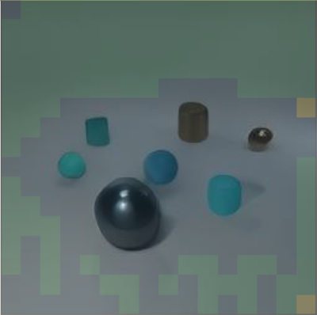
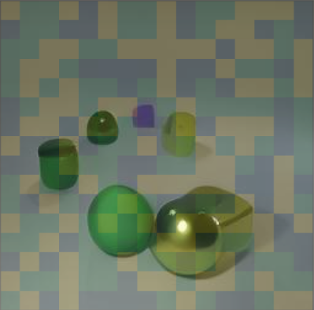
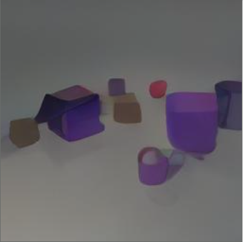
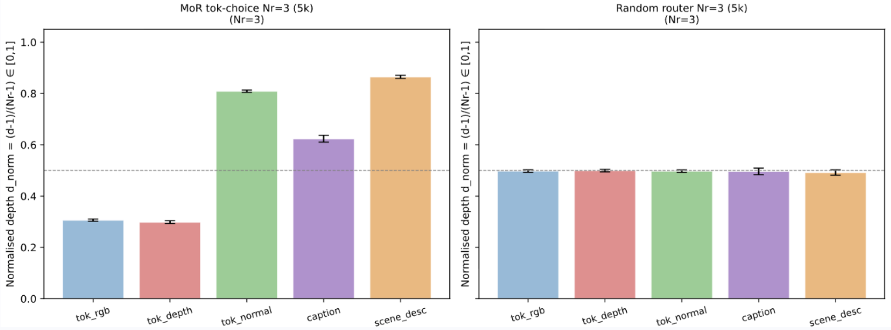
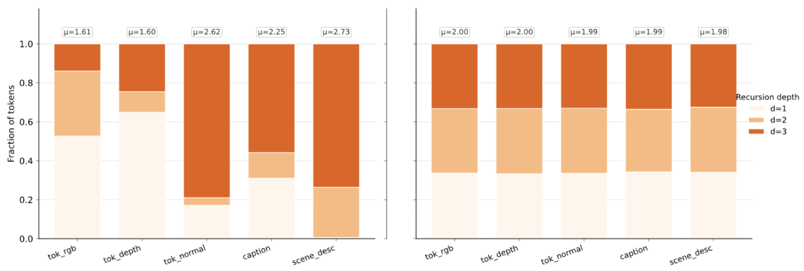
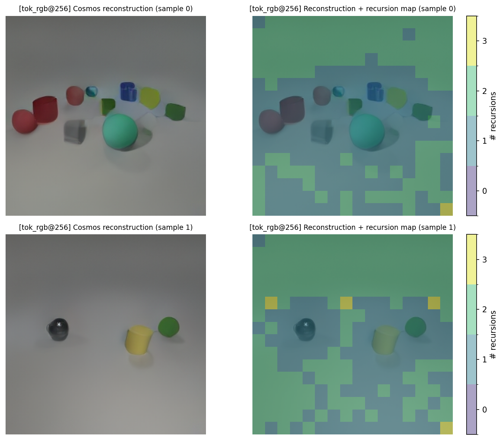
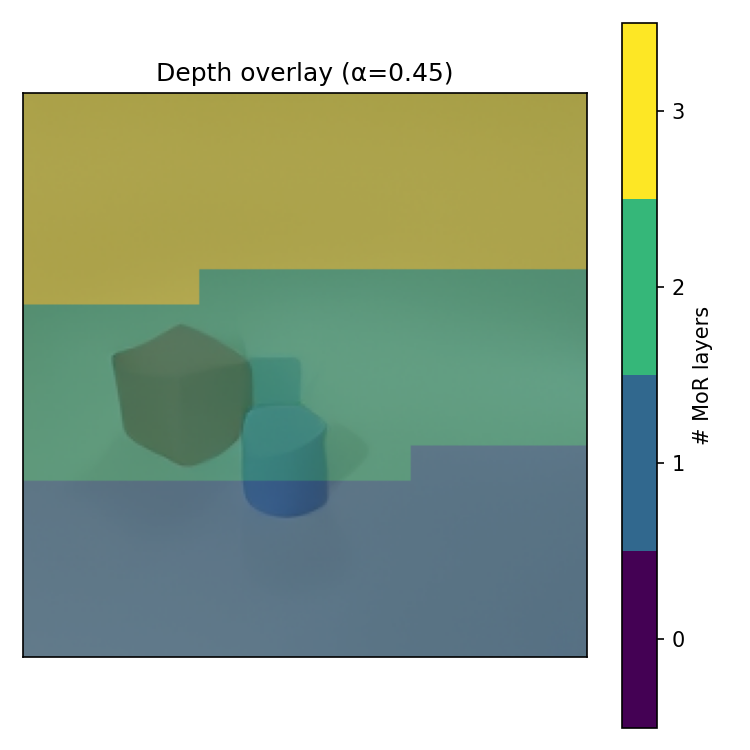

We adapt Mixture-of-Recursions to vision: a single shared
transformer block applied a variable number of times per token, learning where
to spend compute on an image — and across modalities.
Multimodal vision models such as 4M[1,2]
and TerraMind[3], as well as decoder-only approaches like
MaskGIT[4], process all spatial tokens through
the same number of Transformer layers. This uniform computation prevents the model from adapting its computational effort to
the heterogeneous information content of visual scenes. For example, a visually simple sky patch receives the
same amount of processing as an object boundary.
Similarly, different modalities can carry very different amount of semantic information at the same spatial location.
Bae et al. address a related limitation in language modeling with Mixture-of-Recursions (MoR)[5] by learning per-token recursion depth via lightweight routers: a shared
parameter block is applied a variable number of times depending on each token's
complexity. In this way, tokens can receive different amounts of computation depending on their estimated complexity. However, MoR was designed to generate text. In this project, we propose to adapt their approach to images and multimodal generation, which
leads to the following research questions:
RQ1. Does the router learn to assign deeper recursion to semantically
complex visual tokens and shallower recursion to simpler ones?
RQ2. Does the model allocate computation differently across
modalities, and do tokens from different modalities specialize at different recursion
depths?
RQ3. Can adaptive recursion match or improve generation quality
relative to a fixed-depth baseline while reducing compute?
Why is it important?
Efficiency. In the original MoR paper, adaptive recursion achieves
lower validation loss with ~50% fewer parameters than vanilla transformers under equal
training compute [5]. Extending this idea to vision is particularly
relevant because images are represented as many spatial tokens, making computation and activation memory scale
quickly with sequence length. Adaptive recursion could therefore reduce training FLOPs and
memory usage by allocating deeper processing only to tokens that need it.
Interpretability. Routing patterns provide a direct lens into how the
model allocates computation across the input. By visualizing which image patches or modalities are assigned
deeper recursion, we can inspect the model’s internal compute-allocation strategy, which is not directly accessible in standard Transformer architectures.
This is particularly relevant for vision, where adaptive routing can reveal whether the model prioritizes semantically rich or visually salient regions,
similarly to selective processing mechanisms in biological vision [6].
Generalization to new domains. MoR was originally introduced for language
modeling, where adaptive recursion is applied to text tokens. However, whether this form of token-level adaptive computation can transfer to non-text domains remains largely unexplored. Our work
addresses this gap by investigating its application to visual and multimodal generation.
II. Related Work
The Universal Transformer[9] introduced recursive
parameter sharing with per-position adaptive halting, showing that different sequence
positions can benefit from different effective depths.
Mixture-of-Depths (MoD)[10] later proposed
top-$k$ routing to skip tokens at individual layers, matching baseline quality with up
to 50% fewer FLOPs, but without parameter sharing across layers, so model size still
grows with depth.
Mixture-of-Recursions (MoR)[5] unifies both ideas
by applying lightweight per-token routers to a shared recursive block, establishing a
new Pareto frontier across 135M to 1.7B parameter scales. All MoR experiments are
conducted on language only, and extending this framework to vision is explicitly listed
as an open direction by the authors.
In vision, A-ViT[11] applies per-token adaptive
halting to patch embeddings, but the study is restricted to unimodal classification and
does not involve parameter-shared recursion.
$\gamma$-MoD[12] extends token skipping to
multimodal LLMs but relies on unique layers and does not study cross-modal routing
patterns. On the generative side, our backbone is informed by any-to-any multimodal
generators such as 4M[1,2] and
TerraMind[3], which tokenize heterogeneous
modalities into a unified discrete vocabulary and train a single transformer to predict
across them. We adopt the same recipe, using the Cosmos DI-16x16 tokenizer
[7] for visual modalities and GPT-2 for text, but replace the
fixed-depth decoder with a recursive one.
To our knowledge, no prior work combines MoR's recursive adaptive-depth framework
with discrete multimodal vision tokens or studies cross-modal routing
interpretability.
III. Method
Overview
This section describes the methodological pipeline used in our MoR-for-Vision framework. We first introduce how
visual and textual modalities are converted into a shared discrete token representation. We then describe the recursive
decoder architecture and justify our choice of token-choice routing, based on
the limitations observed with expert-choice routing. Finally, we explain how the model performs autoregressive generation and present the experimental
protocol and baselines used to evaluate the contribution of learned adaptive
recursion.
Multimodal Tokenization
Visual modalities are discretized by the
Cosmos DI-16×16 tokenizer [7], producing 256
tokens per $256{\times}256$ image, and text modalities are tokenized with GPT-2 BPE. All modalities are mapped into a single discrete token space, so training reduces to
standard next-token prediction. The resulting unified
vocabulary contains 242,271 tokens, with separate codebook slots for RGB,
depth, normals, and captions.
For each sample, token sequences from the modalities are concatenated into a single flat sequence following a fixed ordering
(RGB, depth, normals, text). This allows the model to condition on one modality and generate another using the same autoregressive objective.
Recursive Decoder Architecture
We build on a SmolLM-135M LLaMA-based [8] decoder-only transformer
with Middle-Cycle parameter sharing and $N_r{=}3$ recursion steps, following the MoR setup [5].
Instead of using a different transformer block at each depth, the model reuses a shared recursive block $f_\theta$ several times. This allows the model to
increase the effective computation depth without increasing the number of parameters proportionally.
Figure 1. Overview of our MoR-for-Vision architecture. Each modality
is tokenized by its own tokenizer and concatenated into a single sequence. A token-choice router assigns each token
a recursion depth, determining how many times it passes through the shared block. The shared
recursive block is then applied up to $N_r{=}3$ times.
Routing Strategy: Why We Use Only Token-Choice
We initially considered two routing strategies: expert-choice and token-choice.
Expert-choice routing selects, at each recursion depth, the top-$k$ tokens to
process further, enforcing a fixed computational budget per recursion depth. However, we found in
the unimodal RGB experiments that the cheapest way for the
model to satisfy this budget while minimizing loss is to converge to a position-dependent pattern,
routing early-sequence tokens deep and later tokens shallow, regardless of image content
(see §IV). We even tested whether this positional collapse could be mitigated by randomly shuffling visual tokens during autoregressive training while
retaining their original positional embeddings, inspired by prior work on randomized or
order-agnostic autoregressive generation [14][15]. However, the resulting routing behavior remained qualitatively unchanged (see §IV). This made expert-choice unsuitable for studying content-dependent visual routing.
For this reason, our final model uses token-choice routing.
Instead of choosing a fixed number of tokens per recursion depth, each token
independently receives a recursion-depth assignment from the start. This gives
the model more flexibility to allocate computation based on the token itself,
rather than on a global top-$k$ budget. In our experiments, token-choice routing
produced a content-dependent depth distribution and was therefore used for the final MoR-for-Vision model.
The router output at each
recursion is mixed back into the residual stream with a scalar weight $\alpha$, which
controls how strongly the routing decision influences the representation. We found $\alpha{=}1.0$ to be critical: smaller values caused the
router to collapse to a single depth, while $\alpha{=}1.0$ encouraged
differentiation between depth 1, depth 2, and depth 3 tokens (reported in §IV).
Autoregressive Generation
During autoregressive generation, the model predicts the output sequence one token at a time.
At generation step $t$, all previous tokens in the prefix are used to predict the next token.
During the first recursion pass, all prefix tokens enter the shared recursive block. During the second
pass, only tokens assigned to depth 2 or 3 are processed again. During the third pass, only
tokens assigned to depth 3 are processed. Because we use $N_r{=}3$, there are at most three
recursive passes.
After the recursive block, the hidden state is passed
to the final transformer layer and then to the Language Modeling head, which outputs 242,271 logits over the
shared multimodal vocabulary. The selected token is appended to the sequence and used as context
for the next generation step. For visual
modalities, the generated discrete tokens are finally decoded back into an
image.
Recursion-wise KV caching is used to make this generation process more efficient. Tokens assigned to
shallower recursion depths do not need to be recomputed at deeper recursion passes, and previously
generated tokens can be reused when predicting the next token.
Video 1. Implementation overview of our MoR-for-Vision pipeline,
showing the multimodal tokenization, routing behavior, and autoregressive generation process.
Experimental Protocol
We organized the experiments in two stages:
Milestone I, unimodal proof of concept. We first train MoR on RGB only,
to verify that adaptive recursion transfers from language to vision at all. This stage
lets us test whether adaptive recursion transfers from language to vision, compare expert-choice and
token-choice routing strategies, and tune the key hyperparameters (in particular the residual
mixing weight $\alpha$) to select the final token-choice configuration before introducing multiple modalities.
Milestone II, multimodal setting. Using the insights from Milestone I,
we extend the model to multimodal setting with RGB, depth, normals, and captions. The token-choice router and
$\alpha$ value selected in Milestone I are carried over to the multimodal experiments. Our initial plan called for
one dedicated router per modality, but Milestone I results led us to revise this. Therefore, we
use a single shared router trained with random modality orderings, so that the router
sees all modality types in context and cross-modal routing patterns can be studied (RQ2).
Baselines
To isolate the contribution of learned routing, we compare our model against two
baselines.
The vanilla SmolLM-135M baseline is a standard fixed-depth transformer with no
recursion and no router, trained under the same conditions. It represents the fixed-compute
upper bound and the quality target we aim to match or exceed with fewer FLOPs.
The random-router MoR baseline uses the same recursive architecture as our model
but assigns recursion depths randomly instead of learning them. Comparing against this baseline separates the effect of the
recursive architecture from the effect of learned routing.
IV. Experiments & Results
Dataset and Training Setup
All models are trained on the multimodal CLEVR dataset[13]
(70K scenes), which provides pre-tokenized RGB, depth, surface normals, scene
descriptions, and captions via the Cosmos DI-16×16 tokenizer (256 discrete tokens
per visual modality). Milestone I trains on RGB only for 19,500 steps following the
original MoR configuration [5].
Model
# Params (M)
Training FLOPs
Train loss ($\downarrow$)
Vanilla (no recursion)
242.2
$7.91 \times 10^{17}$
3.29
Random router MoR
178.5
$2.79 \times 10^{17}$
3.58
Token-choice MoR (ours)
179.2
$3.05 \times 10^{17}$
3.62
Expert-choice
194.4
$4.22 \times 10^{17}$
3.90
Table 1. Parameters, training FLOPs and final loss at 19,500 steps
(Milestone I, RGB only). Best result per row in bold. Token-choice MoR uses ~26% fewer training FLOPs than the
vanilla baseline while staying within 0.33 of its training loss.
Milestone II extends training to all
four modalities with random ordering, but only for 5,000 steps due to computational constraints. In practice, training the multimodal model for substantially longer would have required approximately
one full week on the Izar cluster, which was not feasible within the project
timeline. Training loss is standard next-token prediction, and FLOPs are total training compute.
Model
# Params (M)
Training FLOPs
Train loss ($\downarrow$)
Vanilla (no recursion)
242.2
$8.05 \times 10^{17}$
2.09
Random router MoR
178.5
$3.07 \times 10^{17}$
2.27
Token-choice MoR (ours)
179.2
$3.18 \times 10^{17}$
2.27
Table 2. Parameters, training FLOPs and final loss at 5,000 steps
(Milestone II, multimodal training). Best result per row in bold. Token-choice MoR uses ~61% fewer training FLOPs than the
vanilla baseline while staying within 0.18 of its training loss.
The token-choice MoR model remains close to the vanilla fixed-depth baseline in terms of training loss while requiring
substantially less training compute. This trade-off is especially notable in the multimodal setting: despite using approximately 61% fewer training FLOPs,
the token-choice model reaches a final loss only 0.18 higher than the vanilla model.
RGB-Only Inference: Conditional Generation
To evaluate reconstruction quality within a single modality, we condition the model on
the first 25% of tokens from a given modality sequence and ask it to generate the
remaining 75% autoregressively. This tests whether the model has learned a coherent
internal representation of that modality. We report mean squared error (MSE) between
the generated and ground-truth token sequences after decoding, comparing token-choice
MoR against the vanilla and random-router baselines.

(a) Token-choice MoR

(b) Random router

(c) Vanilla LLaMA
Figure 2. RGB-only conditional generation at inference time
using 25% context and 75% autoregressive generation. Qualitative comparison
across token-choice MoR, random-router MoR, and vanilla LLaMA baselines.
Model
RGB PPL ($\downarrow$)
Vanilla (no recursion)
56.598 ± 36.032
Random router MoR
77.094 ± 49.797
Token-choice MoR (ours)
72.838 ± 49.325
Table 3. Within-modality RGB reconstruction perplexity (25% context, 75% generated). Lower is better and best result per row in bold.
Perplexity (PPL) measures how uncertain the model is when predicting the next token. Lower perplexity means the model assigns higher probability to the
correct continuation and therefore generates the RGB sequence more confidently.
In this RGB-only reconstruction setting, the vanilla fixed-depth model obtains the lowest perplexity, while token-choice MoR improves over the random-router
baseline but remains higher than vanilla. This suggests that learned routing is
beneficial compared with random recursion-depth assignment, although the
fixed-depth baseline still performs best.
Cross-Modal Generation
We condition the model on one full input modality and generate a target modality
autoregressively. Different output types call for different metrics. For dense visual
outputs (image-to-image), we use MSE on decoded token sequences. For structured
semantic outputs we use task-appropriate metrics: IoU for scene descriptions (measuring
object-level agreement), and CLIPScore for captions (measuring semantic alignment
between the generated text and the input image).
Direction
Metric
Vanilla (no recursion)
Random router MoR
Token-Choice MoR (ours)
RGB → Caption
CLIPScore ($\uparrow$)
34.122 ± 2.076
34.093 ± 2.310
33.930 ± 2.232
BLEU-4 ($\uparrow$)
0.432 ± 0.227
0.379 ± 0.218
0.406 ± 0.226
Caption → RGB
Pixel-MSE ($\downarrow$)
695.751 ± 320.936
816.684 ± 420.484
658.456 ± 288.196
SSIM ($\uparrow$)
0.841 ± 0.065
0.833 ± 0.072
0.844 ± 0.063
Table 4. Cross-modal generation metrics. Best result per row in bold.
RGB → Scene description (object detection)
We also evaluate how well the model recovers structured scene descriptions from RGB
input. Predicted descriptions are parsed into object sets and matched to ground-truth
objects via Hungarian matching with strict attribute equality (shape, color, and
material must all match). This gives a Jaccard score (set IoU), F1, and positional
accuracy, as well as per-attribute classification accuracy.
Metric
Vanilla
Random ($N_r{=}3$)
MoR ($N_r{=}3$, ours)
MoR ($N_r{=}4$)
Jaccard ($\uparrow$)
0.830
0.803
—
0.802
F1 ($\uparrow$)
0.893
0.875
0.878
0.872
Precision ($\uparrow$)
0.962
0.939
0.946
0.938
Recall ($\uparrow$)
0.847
0.832
0.832
0.827
Position L2 ($\downarrow$)
0.669
1.075
1.045
0.860
Shape accuracy ($\uparrow$)
0.974
0.950
0.956
0.956
Color accuracy ($\uparrow$)
0.978
0.964
0.961
0.965
Material accuracy ($\uparrow$)
0.985
0.978
0.979
0.977
Table 5. RGB → scene description: object detection metrics on 500
samples. Vanilla leads across all metrics; MoR ($N_r{=}3$) is closest on F1 and
material accuracy. Jaccard for MoR ($N_r{=}3$) was not reported. Best per row in bold.
Modality-To-Modality Generation
You can browse generated outputs for each modality pair using the interactive viewer below.
For each combination, we show the input, the model's generated output, and the ground
truth side by side.
Select an input and an output below to visualise the generated result.
Input
→
Output
Please select different input and output modalities.
Generated
Ground Truth
Router Analysis
Beyond generation quality, we want to understand what the router actually learns. We
look at three complementary views: the average recursion depth it assigns per modality,
the full depth distribution within each modality, and a side-by-side comparison with
the expert-choice router that collapsed to a positional schedule.
Average recursion depth per modality
We compute, for each output modality, the average recursion depth assigned by the
token-choice router, broken down by which modality was used as context at inference
time. If the router has learned modality-specific routing strategies, we expect these
per-modality averages to differ, both across output modalities and across conditioning
modalities (RQ2).

Figure 3. Average recursion depth per output modality, broken down by
conditioning modality. The left panel shows the results for the token-choice MoR model,
while the right panel shows the random-router MoR baseline. Differences across bars indicate
how the router allocates computation depending on both the generated modality and the
conditioning modality.
Depth distribution per modality
To get a finer picture, we plot the full distribution of recursion depths (depth 1, 2,
3) for each modality. A flat distribution would suggest the router treats all tokens
equally within that modality; a peaked one indicates that most tokens agree on a single
depth. We compare these distributions across modalities to check whether RGB, depth,
normals, and caption tokens are routed differently (RQ2).

Figure 4. Distribution of recursion depths across tokens, broken down
by modality. Each bar shows the fraction of tokens routed to depth 1, 2, or 3 for that
modality. The left panel shows the depth distributions for the token-choice MoR model,
while the right panel shows the random-router MoR baseline.
Expert-choice collapse
Although our proposal selected expert-choice routing, it converged in practice to a
position-dependent allocation: tokens at early sequence positions received depth 3, and
later tokens progressively less, producing the fixed three-band pattern in Figure 5(b)
regardless of input content. The reason is structural: expert-choice forces each
recursion stage to retain a fixed top-$k$ fraction of tokens, and the cheapest way to
satisfy this budget constraint while minimizing loss is to adopt a content-independent
positional schedule. We therefore switched to token-choice routing.

(a) Token-choice. Depth-2 in the background, depth-1 around
objects, a sparse subset at depth-3.

(b) Expert-choice. A purely positional schedule (early tokens
at depth-3, later at depth-1) regardless of image content.
Figure 5. Per-token recursion depth heatmaps at inference. Token-choice
produces a content-dependent allocation; expert-choice collapses to a positional artifact.
V. Conclusion and Limitations
Summary
This project investigates whether Mixture-of-Recursions, a technique developed for
language models, can transfer to vision and multimodal generation. Our Milestone I
results on unimodal RGB CLEVR are encouraging: the token-choice router learns a
structured, content-dependent depth policy, uses roughly 26% fewer training FLOPs than
a vanilla fixed-depth baseline, and produces qualitatively cleaner generations. The
routing behavior is interpretable, though it goes against our initial hypothesis: depth
concentrates in the background and on a sparse set of register-like tokens, rather than
on semantically complex boundaries.
Milestone II extends this to the full multimodal setting, training on RGB, depth,
normals, and captions. Although this stage was limited to 5,000 steps
due to computational reasons, token-choice MoR remains
competitive with the vanilla fixed-depth baseline while using approximately 61% fewer training FLOPs. Cross-modal generation
results are mixed, but promising. The vanilla model remains stronger for most generation tasks, with only the caption-to-RGB task as an exception, where
token-choice MoR performs best. Together, these results suggest that adaptive
recursion can scale to multimodal generation and provide a strong compute-quality
trade-off.
Limitations
Generalization. The routing behavior we observe is specific to CLEVR,
a procedurally generated dataset with strong geometric regularity. It may not
generalize to natural images or larger-scale models.
Scale and domain. All results are conducted at the 135M-base scale on CLEVR, a
procedurally generated dataset with strong geometric regularity. It is therefore not clear
whether the routing patterns we observe would hold on natural images or at larger
scale. In particular, we do not yet know whether the same token-depth allocation strategy would be the same.
Generation quality gap with vanilla LLaMA. Although
token-choice MoR provides a favorable compute-quality trade-off, the vanilla
fixed-depth LLaMA baseline still outperforms MoR on several generation
metrics, especially for RGB-to-caption generation and structured
scene-description recovery. This suggests that adaptive recursion reduces
compute but does not yet consistently match the predictive quality of the
fixed-depth model across all tasks.
Generation quality. Vanilla LLaMA outperforms MoR on several
generation metrics. The compute savings come at a cost in raw quality, at least at
this scale and on this dataset.
Limited multimodal training budget. The multimodal model was
trained for only 5,000 steps due to computational constraints. While the
results are promising, longer training would be needed to assess whether MoR
can close the remaining gap with the vanilla baseline and whether the learned
cross-modal routing patterns remain stable.
Future directions
Several directions stand out for follow-up work. First, our conclusions should
be tested at larger scale and on more natural image datasets such as COCO. All current
experiments are based on CLEVR and relatively small models, so it remains open
whether the observed routing patterns, including the background-focused depth
allocation, would persist with larger parameter counts, higher-resolution
inputs, or natural image datasets.
Second, future work should explore more sophisticated routing strategies. The
current token-choice router is simple and efficient, but its objective is still tied to next-token prediction. More sophisticated approaches, such
as reinforcement-learning or Q-learning-inspired routing objectives, could
explicitly optimize the trade-off between generation quality and computational
cost. In addition, a per-modality router variant remains an important ablation:
it would test whether RGB, depth, normals, and text benefit from distinct
routing policies, or whether a shared router is sufficient to capture
cross-modal differences.
Finally, it would be valuable to study MoR with generation frameworks other
than autoregressive decoding. Autoregressive generation imposes a
sequential order on image tokens, which may be suboptimal for spatial data and
can introduce positional biases. Masked-token generation approaches such as
MaskGIT could provide a more natural image-generation setting, where tokens are
generated or refined in parallel. This would help determine whether adaptive
recursion is specifically useful for autoregressive visual generation, or
whether it can generalize to broader generative paradigms.
References
R. Bachmann, D. Mizrahi, A. Atanov, and A. Zamir, "4M: Massively multimodal masked modeling," NeurIPS, 2023.
R. Bachmann et al., "4M-21: An any-to-any vision model for tens of tasks and modalities," NeurIPS, 2024.
J. Jakubik et al., "TerraMind: Large-scale generative multimodality for earth observation," ICCV, 2025.
H. Chang, H. Zhang, L. Jiang, C. Liu, and W. T. Freeman, "MaskGIT: Masked generative image transformer," CVPR, 2022.
S. Bae et al., "Mixture-of-Recursions: Learning dynamic recursive depths for adaptive token-level computation," arXiv:2507.10524, 2025. [arXiv]
M. Carrasco, "Visual attention: The past 25 years," Vision Research, vol. 51, no. 13, pp. 1484–1525, 2011.
NVIDIA, "Cosmos world foundation model platform for physical AI," arXiv:2501.03575, 2025.
A. Grattafiori et al., "The Llama 3 herd of models," NeurIPS, 2024.
M. Dehghani, S. Gouws, O. Vinyals, J. Uszkoreit, and Ł. Kaiser, "Universal Transformers," arXiv:1807.03819, 2018.
D. Raposo et al., "Mixture-of-Depths: Dynamically allocating compute in transformer-based language models," arXiv:2404.02258, 2024.
H. Yin et al., "A-ViT: Adaptive tokens for efficient vision transformer," CVPR, 2022.
Y. Luo et al., "γ-MoD: Exploring mixture-of-depth adaptation for multimodal large language models," arXiv:2410.13859, 2024.
J. Johnson, B. Hariharan, L. van der Maaten, L. Fei-Fei, C. L. Zitnick, and R. Girshick, "CLEVR: A diagnostic dataset for compositional language and elementary visual reasoning," CVPR, 2017.
A. Pannatier, E. Courdier, and F. Fleuret, "σ-GPTs: A New Approach to Autoregressive Models," arXiv:2404.09562, 2024. [arXiv]
Q. Yu, J. He, X. Deng, X. Shen, and L.-C. Chen, "Randomized Autoregressive Visual Generation," arXiv:2411.00776, 2024. [arXiv]